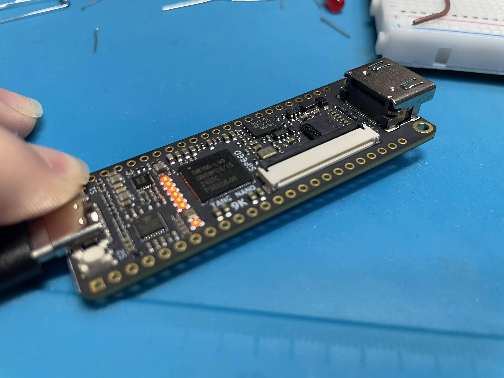

Tang Nano 9Kを買ってsystem verilogを勉強しよう。そしてあわよくばいつかはCPUを作ろう。
目次
Tang Nano 9K
最近よく聞くようになってきたFPGA開発ボードですね。Tang Nano 9Kのほかにも
- Tang Nano 4K
- Tang Nano 9K
- Tang Nano 20K
とかいろいろあります。値段はnKのnの数字に比例して高くなります。でも、20KでもEDA-12と同じぐらいの論理ブロックがあるのですが、EDA-12が3万円前後なのに比べて20Kでも5000円ちょいちょいなのでかなり安価なFPGAです。
FPGAは敷居が高くて研究室とか企業の開発とかでしか触れないイメージがありますが、これは家でArduinoみたいに触れちゃいます。
Gowin EDA
AlteraとかXilinxとかのFPGAは確かに優れています。その理由の一つに統合開発環境があります。Alteraはあまり知りませんが、私も研究室でVivadoとかを触ります。
Vivadoは日本語ですごくわかりやすいうえに、そこそこドキュメントが転がっています。なので、やりやすいです。
Tang Nano 9Kの開発環境
Tang Nano 9Kは残念ながらVivadoは使えません。(たぶん)
なので、代わりに販売会社であるGowinの統合開発環境であるGowin EDAを使います。
Gowin EDAなんですが、Macでは使えません。Windowsとlinuxだけです。しかもLinuxも試している途中ですが、よくわからないライブラリ？がいるかもしれません。
Gowin EDAのダウンロード
ダウンロードは簡単です。Gowinのサイトへ行ってダウンロード。おそらくメンバー登録を求められますが、普通にやったらいいです。
ダウンロードして、exeを実行して終わりです。
しかし、このままでは使えません。ライセンス認証が必要です。
なので、ライセンス認証のページへ行って必要情報を書き込んで終わりです。
企業名は「個人」にしときました。
一日ぐらいで、.lisとかいう添付ファイルが届きます。
それをC:Gowin直下に置いといて、名前をGowin.lisとかにしといたらOKです。
起動から書き込みまで
起動してください。
New projectを選んでください。
お使いのFPGAのICをよく見て、自分のICを選んでください。
全部できたら、右下のちょっと上の方にあるDesignを選択して、空白の上で、右クリックすると
New File Add File
って出てくると思います。
New Fileを選んでください。
すると真ん中に色々
Verilog File VHDL File Physical Constrains File
とか出てくると思います。
その中のVerilog Fileを選んでください。すると右の大きい方のウィンドウが書き込み可能になるはずです。
そこに以下のコードをコピペして張り付けてください。
module button_led (
input wire clk, // 27MHz システムクロック
input wire sw_S1, // S1ボタン入力
input wire sw_S2, // S2ボタン入力（必要に応じてリセットとして使用）
output reg [5:0] led // 6つのLED（負論理）
);
// S1ボタンが押されたらLEDを点灯
always @(posedge clk) begin
if (sw_S1 == 1'b0) // ボタンが押されると0になる
led <= 6'b000000; // すべてのLEDを点灯（負論理）
else
led <= 6'b111111; // すべてのLEDを消灯
end
endmodule
CTRL+Sで保存してください。
これはVerilog Fileです。
次に、crtファイル、制約ファイルを作成します。
先ほどのようにNew FileからPhysical Constrains Fileを選択してください。
そこに以下のコードをコピペしてペーストしてください
// Pin assign for Tang Nano 9K
IO_LOC "clk" 52; // 27MHz clock
//IO_LOC "txd_o" 17; // TXD to USB
//IO_LOC "rxd_i" 18; // RXD from USB
IO_LOC "sw_S1" 4; // Tactile Switch S1
IO_LOC "sw_S2" 3; // Tactile Switch S2
/*
IO_LOC "gpout[0]" 70;
IO_LOC "gpout[1]" 71;
IO_LOC "gpout[2]" 72;
IO_LOC "gpout[3]" 73;
IO_LOC "gpout[4]" 74;
IO_LOC "gpout[5]" 75;
IO_LOC "gpout[6]" 76;
IO_LOC "gpout[7]" 77;
IO_LOC "gpin[0]" 28;
IO_LOC "gpin[1]" 27;
IO_LOC "gpin[2]" 26;
IO_LOC "gpin[3]" 25;
IO_LOC "gpin[4]" 39;
IO_LOC "gpin[5]" 36;
IO_LOC "gpin[6]" 37;
IO_LOC "gpin[7]" 38;
*/
// LEDs (Negative logic) They lit with '0'.
IO_LOC "led[0]" 10;
IO_PORT "led[0]" PULL_MODE=UP DRIVE=8;
IO_LOC "led[1]" 11;
IO_PORT "led[1]" PULL_MODE=UP DRIVE=8;
IO_LOC "led[2]" 13;
IO_PORT "led[2]" PULL_MODE=UP DRIVE=8;
IO_LOC "led[3]" 14;
IO_PORT "led[3]" PULL_MODE=UP DRIVE=8;
IO_LOC "led[4]" 15;
IO_PORT "led[4]" PULL_MODE=UP DRIVE=8;
IO_LOC "led[5]" 16;
IO_PORT "led[5]" PULL_MODE=UP DRIVE=8;
できたら、次は、
Designの隣のProsessを選んでください。
Prosessの欄にある、Synthesizeを右クリックしてRUN
なにも問題がなければ、その下のPlace And Route
RUNしてください。
また、何も問題がなければ、さらにその下のProgrammをクリックしてください。
おそらく別ウィンドウが起動すると思うので、Tang Nanoを接続しているUSBを選んでください。設定は何も触らなくてOK
FileとかToolとかのバーの下にあるRunマークの付いたやつを押すとプログラムの書き込みが始まります。これで書き込めました。
動作

こういう感じでLEDが光ります。
注意事項
ここまで読んでいる方で、FPGAでの開発経験がある方は不思議に思っている方もいるかもしれませんが、なんと
Gowin EDAにはシミュレーション機能はありません。
なので、iVerilogやサードパーティー製のシミュレーションソフトを使って検証を行ってください。